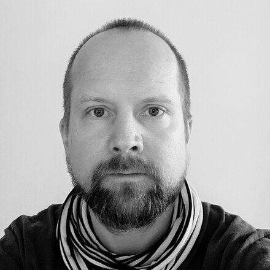

Heikki Wilenius
Anthropologist · Helsinki
I'm a postdoctoral researcher in anthropology at the University of Helsinki, currently studying how generative AI is changing the work of software developers. I also have substantial experience as an e‑learning specialist and software developer.
Elsewhere
Publications orcid.org/0000-0003-4601-2392 Most of my research relates to either Indonesia, politics, sound, or technology. Notes adhocism.net A digital garden: a slowly growing patch of notes, half-formed ideas, and things I'm thinking through out in the open. Code github.com/wilenius Most of what I make ends up here — research tooling, small web things, and the odd experiment. Posts @hw@fediscience.org Mostly AI and anthropology, on Mastodon.
Email
heikki.wilenius
at iki.fi
I like an old-fashioned email — please get in
touch.